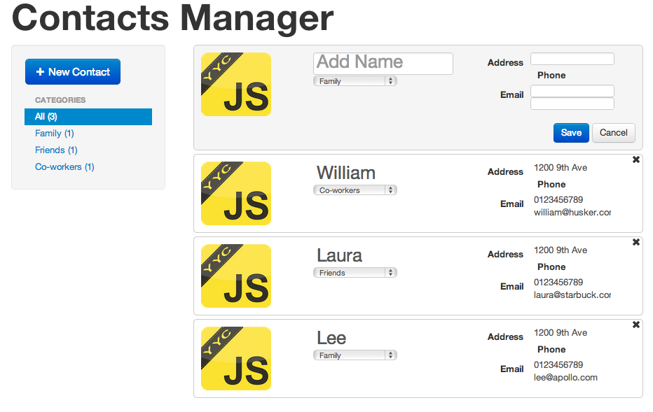

JavaScript Like
Presenter Notes
Contacts application

Presenter Notes
Google Dart
Presenter Notes
Google Dart
Dart brings structure to web app engineering with a new language, libraries, and tools
- Class based
- Object oriented
- Typed (optional)
- Compiles to JavaScript
To get started:
- Download the SDK (comes with Chromium browser)
- Check out the language tour
- Language spec
Presenter Notes
Google Dart Reviewed
- Object oriented so pretty familiar
- Fast!
-
Need the Dart IDE (WTF).
-
Can now use Webstorm (which is awesome)
- Data types and inheritance were confusing and not expected.
- Two different HTML elements (HTML, Html)... WTF!
Presenter Notes
CoffeeScript Reviewed
- Good documentation
- Lightweight
- Easy integration with third party libraries and RequireJS
- A lot of examples out now
- If you don't come from Ruby it takes a bit to get used to the syntax
- Indentation can really fuck up the context
- Improper indentation can create bugs that will make you want to kill yourself
- Good out of the box compiler. Nice additional functions
- You always need a compile step
Presenter Notes
TypeScript Reviewed
- A lot of documentation
- A lot of decent sized examples on the TypeScript website
- Lots of flexibility but IMO it's too much. Too many different ways to do things so without best practices code can turn into a cluster-fuck real quick.
- Integration with third party libraries are fucking terrible
- How to include other modules:
/// <reference path="./contact.ts"/>WTF is that! - Declaring types is kinda crazy
- Feels like a mix between C# and JavaScript so a little familiar
- Inheritance is kind of nice, actually
- Optional parameters are weird
firstName?: string - What is with the
.d.tsfiles? They are essentially TypeScript header files for JavaScript modules. Who is hell is gonna write and maintain those?
Presenter Notes
Overall Review
- No real best practices (that we found). So you have to figure it all out yourself.
- Source maps are pretty decent now so debugging is a little less painful.
Presenter Notes
CoffeeScript

Presenter Notes
CoffeeScript
A rubyish-pythonesque-javascriptish language that compiles to javascript. Basically it makes your code less verbose.
Functions can be created rubyishly:
square = (x) -> x * x
Great features for making functions with arbitrary-length argument list:
awardMedals = (first, second, others...) ->
//do stuff with the arguments!
Gotta love awesome pythonic list comprehensions
eat food for food in ['toast', 'cheese', 'wine']
Countdown:
countdown = (num for num in [10..1])
Presenter Notes
CoffeeScript
Cool array slicing features
numbers = [1, 2, 3, 4, 5, 6, 7, 8, 9]
start = numbers[0..2]
It also has classes, inheritance and super
And more... (which is my way of saying that I'm running out of time and need some more hands on this)
Presenter Notes
Microsoft TypeScript

Presenter Notes
What is TypeScript?
From the TypeScript Site:
- TypeScript is a language for application-scale JavaScript development.
- TypeScript is a typed superset of JavaScript that compiles to plain JavaScript.
- Any browser. Any host. Any OS. Open Source.
Presenter Notes
TypeScript Example
<!DOCTYPE html>
<html>
<head><title> TypeScript Greeter </title></head>
<body>
<script src='greeter.js'></script>
</body>
</html>
Presenter Notes
TypeScript Example Continued...
class Greeter {
constructor(public greeting: string) { }
greet() {
return "<h1>" + this.greeting + "</h1>";
}
};
var greeter = new Greeter("Hello, world!");
var str = greeter.greet();
document.body.innerHTML = str;
Presenter Notes
TypeScript: Up and Running
npm install -g typescript- Write your code with a
.tsfile extension - Compile your typescript
tsc your_file.ts - Include your compiled JS files like usual
<script src="path/to/your_file.js"></script>
If you like Visual Studio
Go to the TypeScript tutorial